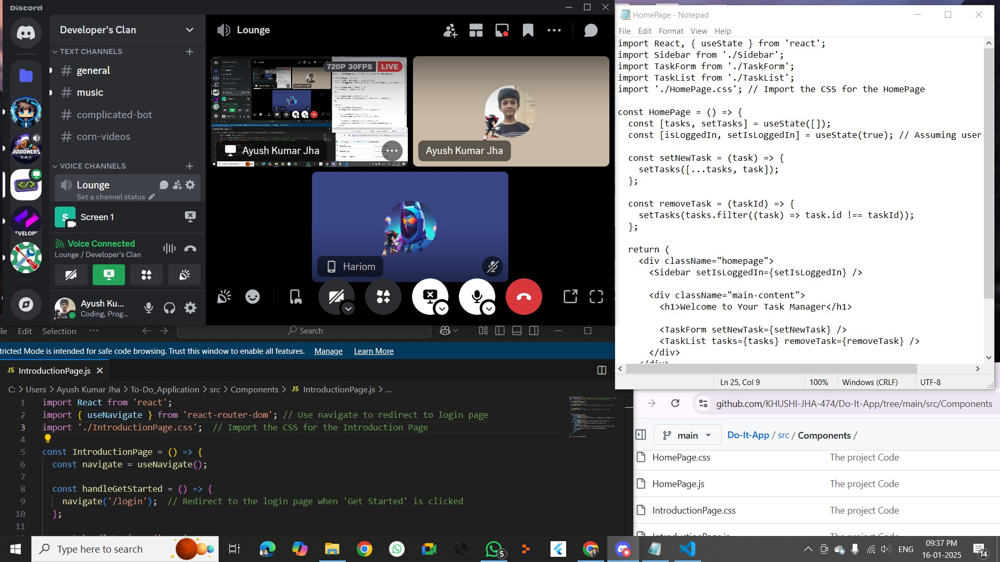

By the means of this activity, not only was I able to learn computer skills and teach them interactively, but I also learned how to properly communicate with someone online. This activity helped me develop further.
Evidence Photos

By the means of this activity, not only was I able to learn computer skills and teach them interactively, but I also learned how to properly communicate with someone online. This activity helped me develop further.